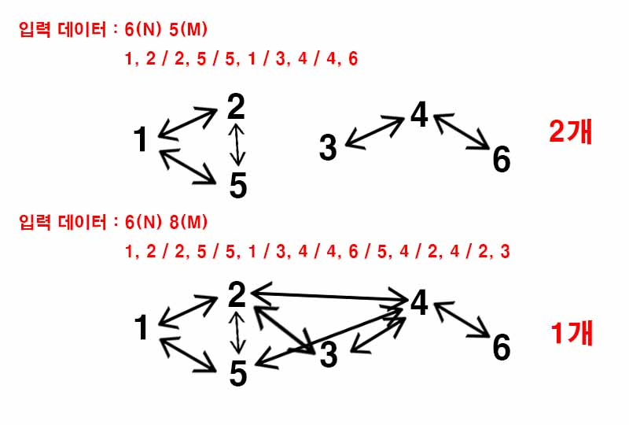

백준 11724. 연결 요소의 개수
- https://www.acmicpc.net/problem/11724
-
문제 :
방향 없는 그래프가 주어졌을 때, 연결 요소 (Connected Component)의 개수를 구하는 프로그램을 작성하시오. -
입력 :
첫째 줄에 정점의 개수 N과 간선의 개수 M이 주어진다. (1 ≤ N ≤ 1,000, 0 ≤ M ≤ N×(N-1)/2) 둘째 줄부터 M개의 줄에 간선의 양 끝점 u와 v가 주어진다. (1 ≤ u, v ≤ N, u ≠ v) 같은 간선은 한 번만 주어진다. -
출력 :
첫째 줄에 연결 요소의 개수를 출력한다. -
풀이 :
입력받은 데이터를 기준으로 정점끼리 연결했을 때 만들어지는 그래프의 개수를 구하는 문제이다.

DFS를 사용했으며 모든 탐색이 끝나면 만들어진 그래프의 개수를 출력한다.